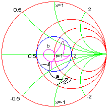

Example: Wide Band Matching Network Example: Wide Band Matching Network
Example: Wide Band Matching Network Example: Wide Band Matching NetworkThe examples considered so far have been examined at single frequency. We will now consider impedance matching network for a range of frequencies. One of the interesting aspects of wide band networks is the introduction of a new variable which is the termination itself. In many practical situations the wide band "load" is a frequency dependent antenna. QuickSmith takes this into account by allowing the user to link the frequency-dependent termination to the program. The impedances corresponding to the intermediate frequencies are computed using interpolation algorithms. Since it is not possible to match a band of frequencies to an VSWR of 1:1, we try to design a network such that our bandwidth of interest falls within a specified VSWR circle. Wide band networks are usually realized after numerous experiments with mutipole networks. The user is urged to explore different wide band topologies.
Problem : The reflection coefficients of a dipole antenna operating between 100 to 200 MHz has been saved in file called "Dipole.Gam". Design a matching network such that VSWR is 2.0 to 1 or better.
Solution: From the Options dialog, choose Multiple terminations, open a new file and link "Dipole.Gam". Draw a 2:1 VSWR circle and perform a frequency sweep as shown in trace-a.
From the Schematic menu add 32 nH inductor in series to the load to move the impedance curve more towards the center. The curve is then folded with a 95 degree, 25 ohm short-circuited stub line referenced at 150 MHz. The final result is shown in trace-b

Start Freq. = 100 MHz
Stop Freq. = 200 MHz
Load = Multiple termination with 12 data points
L2 = 32 nH
S3 = 25 Ohms, 95 degrees